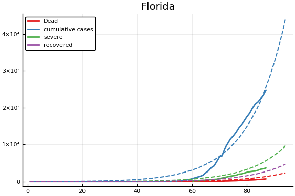

This work is licensed under a Creative Commons Attribution-ShareAlike 4.0 International License
In this section we estimate a SEIR model using data from US States. Compared to the model in the introductory section, the state model introduces some additional components to incorporate additional data.
Data¶
The data combines information on
- Daily case counts and deaths from JHU CSSE
- Daily Hospitalizations, recoveries, and testing from the Covid Tracking Project
- Covid related policy changes from Raifman et al
- Movements from Google Mobility Reports
- Hourly workers from Hoembase
Model¶
For each each the epidemic is modeled as:
where variables are defined as in the introduction, except $CC$, which is new. $CC$ is cumulative confirmed cases. Our data does not contain recoveries for all states, so it is not possible to calculate active cases. Our data does contain cumulative confirmed cases for every state.
Heterogeneity¶
Some parameters are heterogenous across states and/or time. Specifically, we assume that for state $s$,
where $x_{s,t}$ are observables that shift infection rates. In the estimates below, $x_{s,t}$ will be indicators for whether a state of emergency, stay-at-home order, or other related policy is in place, and measures of movement and business operations.1 $\epsilon_{\beta,s}$ is an unobserved error term with mean $0$. Each of the components of $x$ are $0$ in a baseline, pre-epidemic world. Hence $\beta_{j,0}$ is the (median across states) infection rate absent any policy or behavioral response. The model imposes that $\beta_{j}(t)/\beta_{k}(t)$ are constant across states and time. I have no opinion on whether this is a good assumption.
Additionally, testing rates, $\tau_s$, and the portion of people exposed at time $0$, $p_{0,s}$ vary with state. Analogous, to the way $\beta$ is parameterized, we assume
and
Finally, we assume that $a$, $p_1$, $p_2$, $\gamma_1$, and $\gamma_2$ are common across states and time. Arguably these could vary with state demographics (e.g. older populations have lower recovery and higher death rates), and over time with strain on the medical system. We abstract from these concerns for now.
Least Squares estimates¶
It is much faster to compute least squares point estimates than a full Bayesian posterior. Although the statistical properties of these estimates are unclear, they give some idea of how well the model can fit the data, and serve as good initial values for computing Bayesian posteriors. Let $\theta = (a, p, \gamma, \tau, \beta, \alpha, \epsilon)$ denote the parameters. We simply minimize
where $words$ are variables in the data, and capital letters are computed from the model (and implicitly depend on $\theta$). Hospitalizations and recoveries are not observed for all states and days, in which case those terms are simply omitted from the objective function.
Given the equal weights to all observables, the objective function will be dominated by the cumulative cases terms. Particularly in the states and days where it is large.
Estimation¶
using CovidSEIR, Plots, VegaLite, PrettyTables, DataFrames, JLD2
Plots.pyplot()
df = CovidSEIR.statedata()
ode = CovidSEIR.MultiRegion.odeSEIR()
dat = CovidSEIR.RegionsData(df[df[!,:fips].<60,:], idvar=:fips );
out = CovidSEIR.LeastSquares.leastsquares(dat, ode)
params = out.params
@save "jmd/states_$(Dates.today()).jld2" params f
Results¶
Parameters¶
@load "jmd/states_2020-04-19.jld2" params
parms = DataFrame()
for k in keys(params)
if length(params[k])==1
global parms = vcat(parms, DataFrame(Parameter=string(k), Estimate=params[k]))
elseif k == :α
αnames = ["Emergency","K12 closed","Stay at home","Restaurants closed","Non-essential businesses closed",
"%/100 reduction workplaces","%/100 reduction grocery","%/100 reduction retail",
"%/100 reduction hourly businesses open"]
global parms = vcat(parms, DataFrame(Parameter=string(k).*αnames, Estimate=params[k]))
else
L = length(params[k])
global parms = vcat(parms, DataFrame(Parameter=string(k).*string.(1:L), Estimate=params[k]))
end
end
pretty_table(parms[1:19,:], formatters=ft_printf("%5.3g"))
┌─────────────────────────────────────────┬───────────┐
│ Parameter │ Estimate │
│ String │ Float64 │
├─────────────────────────────────────────┼───────────┤
│ β1 │ 0.000354 │
│ β2 │ 0.077 │
│ β3 │ 1.04 │
│ γ1 │ 0.0451 │
│ γ2 │ 0.019 │
│ p1 │ 1e-08 │
│ p2 │ 0.0379 │
│ τ │ 2.21 │
│ a │ 0.0356 │
│ pE0 │ 6.14e-06 │
│ αEmergency │ -0.098 │
│ αK12 closed │ -3.13 │
│ αStay at home │ -0.836 │
│ αRestaurants closed │ -2.33 │
│ αNon-essential businesses closed │ -3.63 │
│ α%/100 reduction workplaces │ -0.00287 │
│ α%/100 reduction grocery │ -0.899 │
│ α%/100 reduction retail │ -0.000107 │
│ α%/100 reduction hourly businesses open │ -4.99 │
└─────────────────────────────────────────┴───────────┘
The parameter estimates have some apparent problems. The estimate of $a$ is much smaller than expected. $1/a$ should be the period of time from infection to becoming contagious. This is generally believed to be around 5 days.
$\beta_{1,0}$ being the smallest means that undetected infectious people are less likely to infect others compared to confirmed mildr or severe cases.
The value of $\tau$ is very high.
To avoid numeric difficulties in optimization, I restricted $-5 \leq \alpha \leq 0$. These constraints sometimes bind. For the policy variables, it is strange that the coefficient on stay at home is not the largest. The magnitude of these are quite larege. For example, closing non-essential businesses reduces infection rate to $e^{-3.63} \approx 0.026$ of what it is was. The combination of all policies cuts infection rates to about 1/20,000th of baseline.
display(histogram(params.eβ, label="ϵ_β"))
display(histogram(params.eτ, label="ϵ_τ"))
display(histogram(params.ep, label="ϵ_p"))
Fit¶
using TransformVariables
trans = as( (β=as(Array, asℝ, 3),
γ=as(Array, asℝ, 2),
p=as(Array, asℝ, 2),
τ=asℝ, a=asℝ, pE0=asℝ,
α=as(Array, asℝ, size(dat.X,1)),
eβ=as(Array, asℝ, length(dat.population)-1),
eτ=as(Array, asℝ, length(dat.population)-1),
ep=as(Array, asℝ, length(dat.population)-1)) )
f = CovidSEIR.LeastSquares.plotfits(dat, ode, inverse(trans, params), trans)
(size(sol), size(tsave)) = ((9, 94), (94,))
(size(sol), size(tsave)) = ((9, 94), (94,))
(size(sol), size(tsave)) = ((9, 94), (94,))
(size(sol), size(tsave)) = ((9, 94), (94,))
(size(sol), size(tsave)) = ((9, 94), (94,))
(size(sol), size(tsave)) = ((9, 94), (94,))
(size(sol), size(tsave)) = ((9, 94), (94,))
(size(sol), size(tsave)) = ((9, 94), (94,))
(size(sol), size(tsave)) = ((9, 94), (94,))
(size(sol), size(tsave)) = ((9, 94), (94,))
(size(sol), size(tsave)) = ((9, 94), (94,))
(size(sol), size(tsave)) = ((9, 94), (94,))
(size(sol), size(tsave)) = ((9, 94), (94,))
(size(sol), size(tsave)) = ((9, 94), (94,))
(size(sol), size(tsave)) = ((9, 94), (94,))
(size(sol), size(tsave)) = ((9, 94), (94,))
(size(sol), size(tsave)) = ((9, 94), (94,))
(size(sol), size(tsave)) = ((9, 94), (94,))
(size(sol), size(tsave)) = ((9, 94), (94,))
(size(sol), size(tsave)) = ((9, 94), (94,))
(size(sol), size(tsave)) = ((9, 94), (94,))
(size(sol), size(tsave)) = ((9, 94), (94,))
(size(sol), size(tsave)) = ((9, 94), (94,))
(size(sol), size(tsave)) = ((9, 94), (94,))
(size(sol), size(tsave)) = ((9, 94), (94,))
(size(sol), size(tsave)) = ((9, 94), (94,))
(size(sol), size(tsave)) = ((9, 94), (94,))
(size(sol), size(tsave)) = ((9, 94), (94,))
(size(sol), size(tsave)) = ((9, 94), (94,))
(size(sol), size(tsave)) = ((9, 94), (94,))
(size(sol), size(tsave)) = ((9, 94), (94,))
(size(sol), size(tsave)) = ((9, 94), (94,))
(size(sol), size(tsave)) = ((9, 94), (94,))
(size(sol), size(tsave)) = ((9, 94), (94,))
(size(sol), size(tsave)) = ((9, 94), (94,))
(size(sol), size(tsave)) = ((9, 94), (94,))
(size(sol), size(tsave)) = ((9, 94), (94,))
(size(sol), size(tsave)) = ((9, 94), (94,))
(size(sol), size(tsave)) = ((9, 94), (94,))
(size(sol), size(tsave)) = ((9, 94), (94,))
(size(sol), size(tsave)) = ((9, 94), (94,))
(size(sol), size(tsave)) = ((9, 94), (94,))
(size(sol), size(tsave)) = ((9, 94), (94,))
(size(sol), size(tsave)) = ((9, 94), (94,))
(size(sol), size(tsave)) = ((9, 94), (94,))
(size(sol), size(tsave)) = ((9, 94), (94,))
(size(sol), size(tsave)) = ((9, 94), (94,))
(size(sol), size(tsave)) = ((9, 94), (94,))
(size(sol), size(tsave)) = ((9, 94), (94,))
(size(sol), size(tsave)) = ((9, 94), (94,))
(size(sol), size(tsave)) = ((9, 94), (94,))
for fig in f.figs
display(fig)
end



-
Including movement and business operations in $x$ makes interpretation difficult. If we want to estimate policy effects, we should be using these auxillary measures in some other way. We should not be holding them constant or conditioning on them. ↩